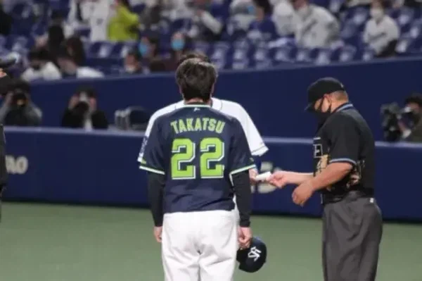
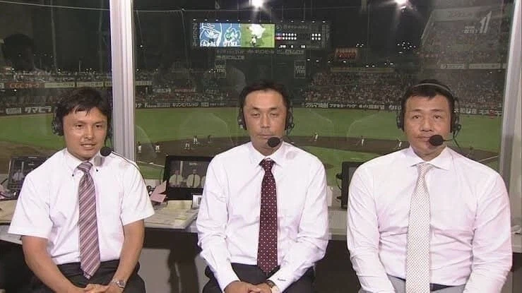
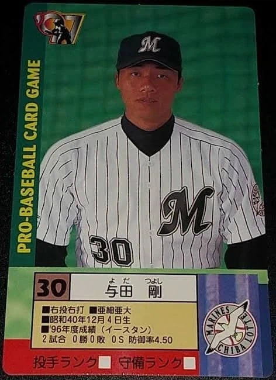
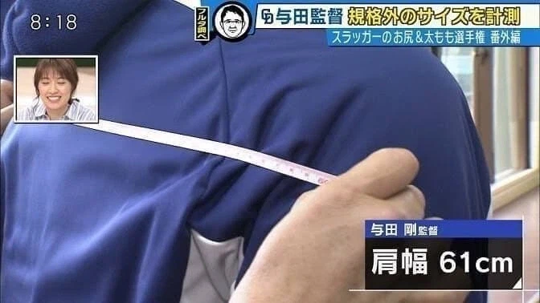

요다 츠요시(182cm 84kg)
전 주니치 드래곤즈 감독이다.
위사진은 정면이 아닌데도 넓은 어깨가 느껴지지만
진정한 진가는 정면에서 나온다.




요다 츠요시(182cm 84kg)




그 아이돌하고 결혼한 남자분도 저런 느낌이던디.ㅋㅋㅋ
야구 선수들 실물보면 진짜 냉장고임ㅋㅋ
와 강다니엘보다 1cm 더 크네
줄리엔 강 말하는건가?
엄마도?
파파도?
같이 고우!
이모도?
61cm는 지리네
부럽다 내 어깨는 40센치도안될거같은데
속버리지말고 연락줘요
와 감탄스럽다 61cm라니 중형세단도 좁아서 운전하기도 힘들겠네
무슨 사람이 사각형이고
홍성흔도 어깨 개넓음 전준우도
ㄷㄷ
아니 와이셔츠 짤은 합성 아님? 세상에 ㅋㅋㅋㅋㅋ